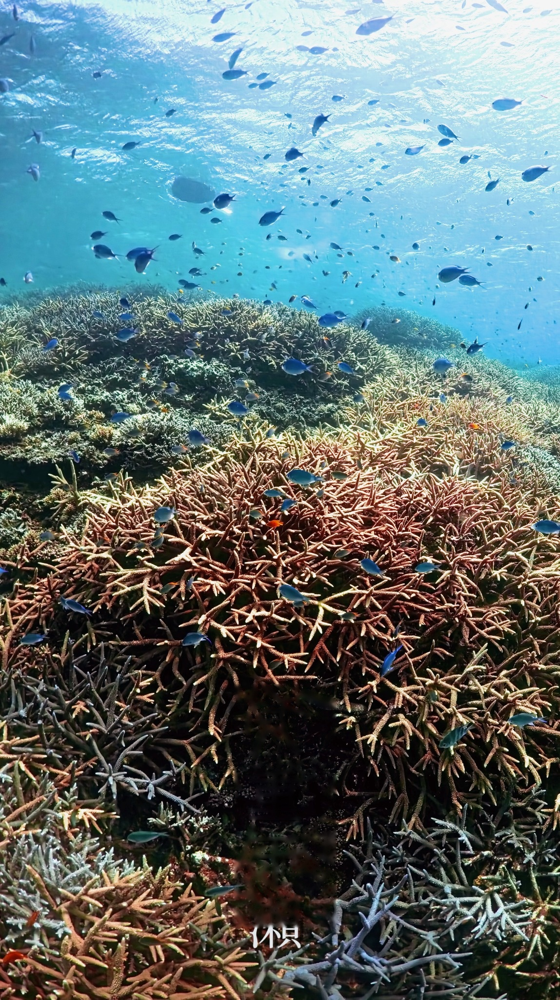
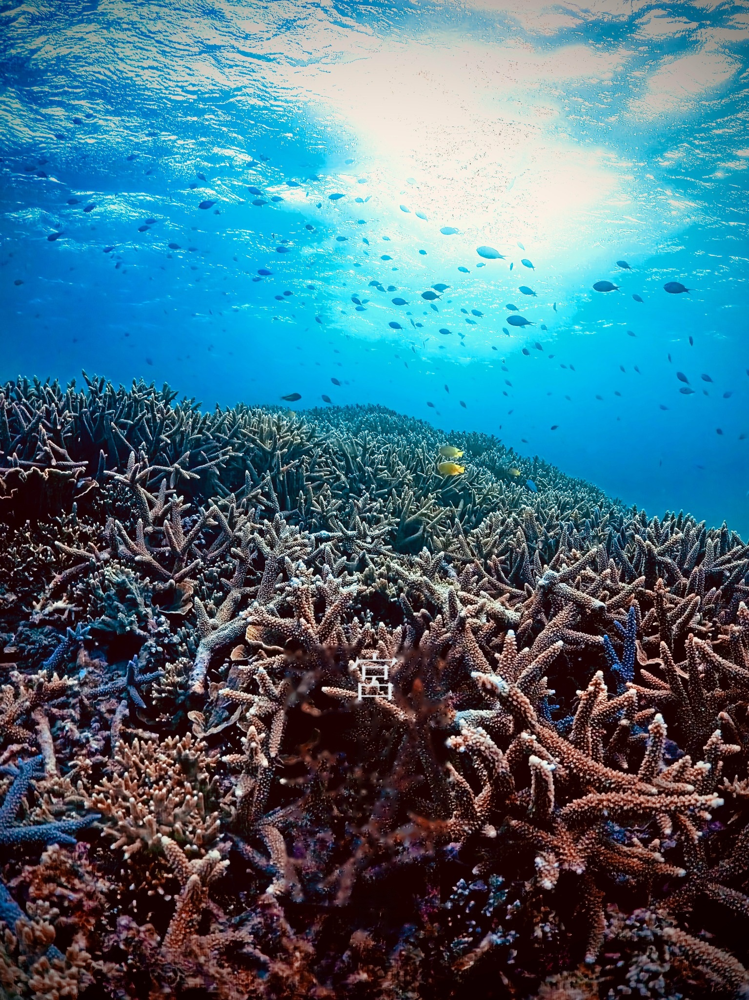
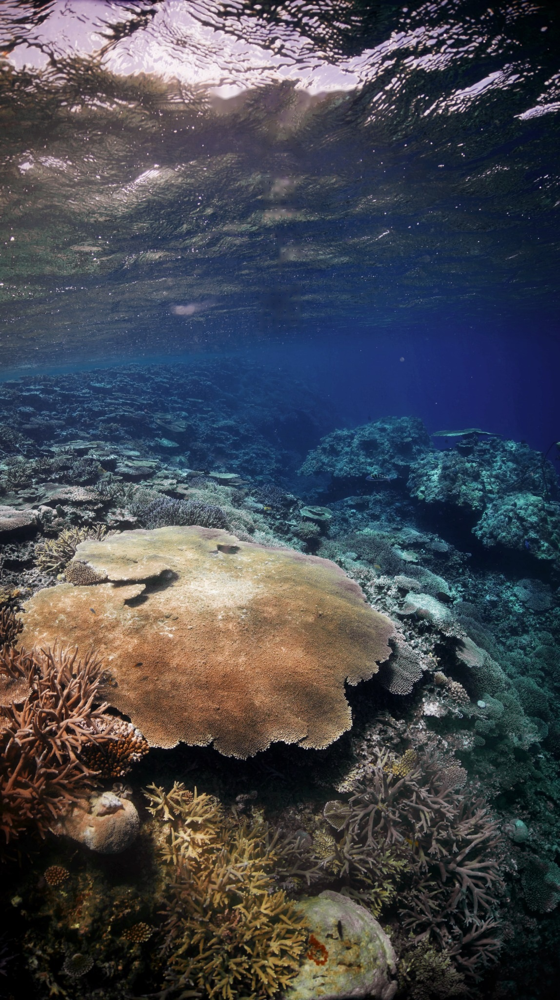
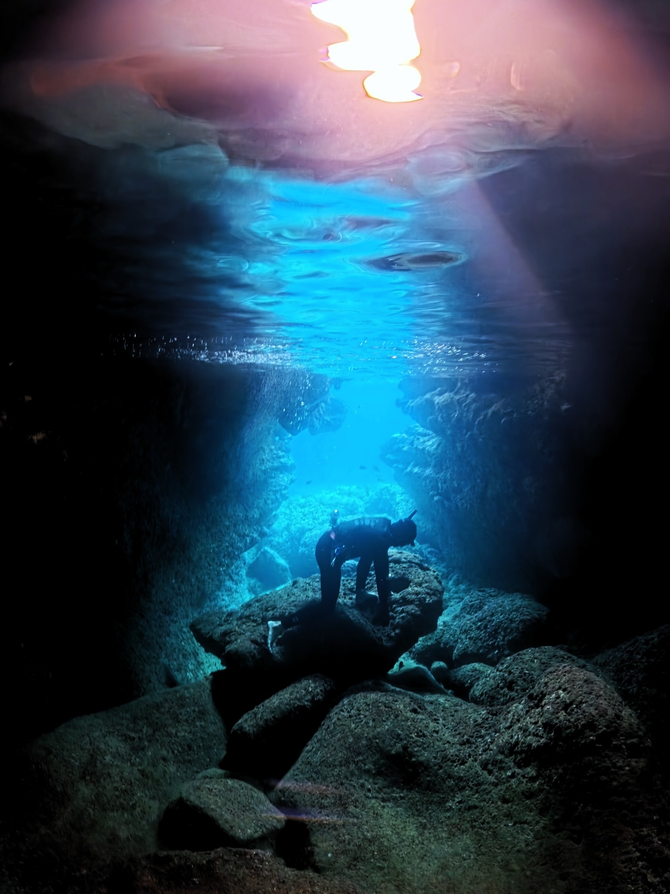
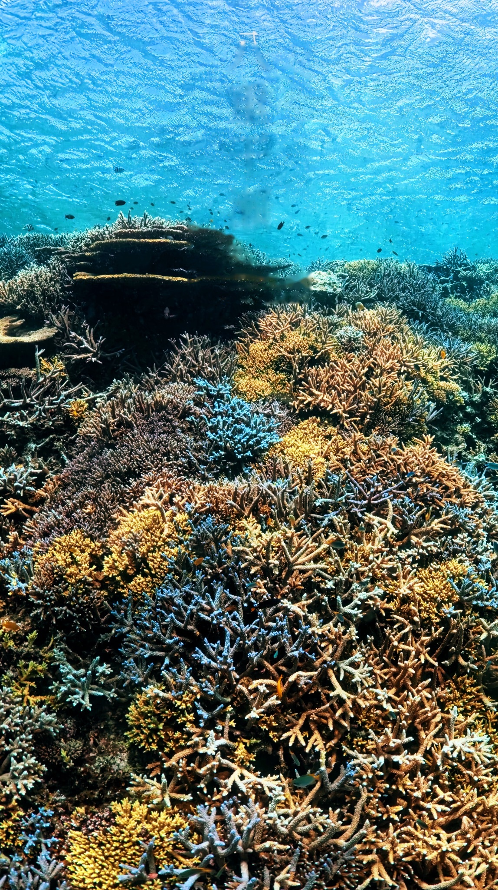
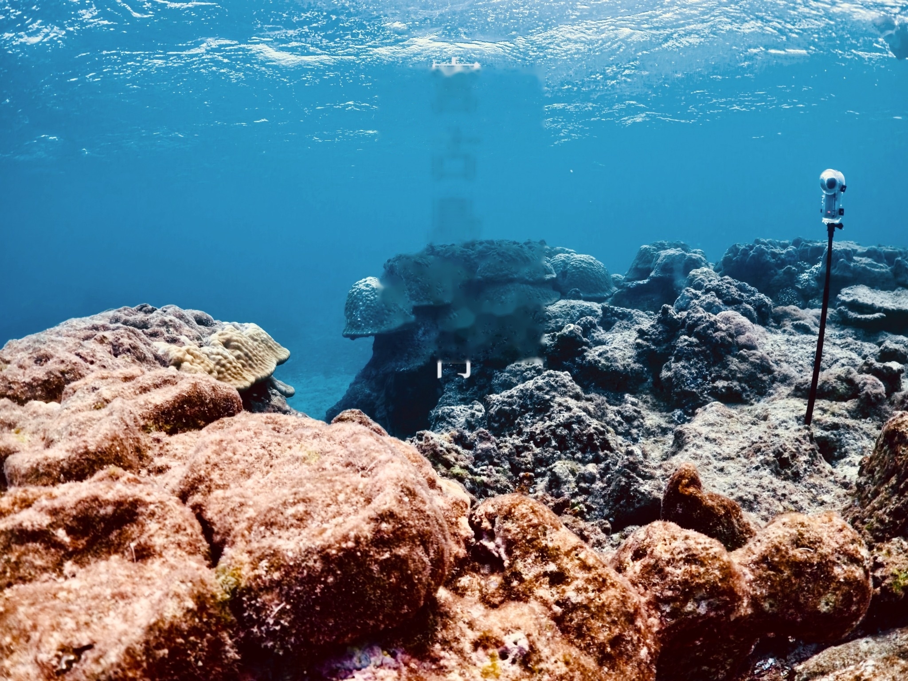
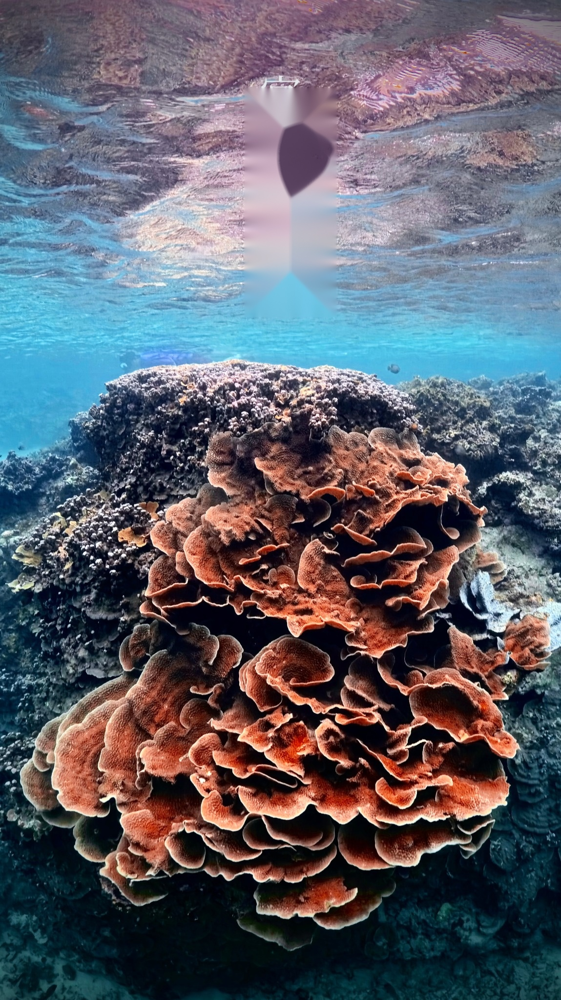
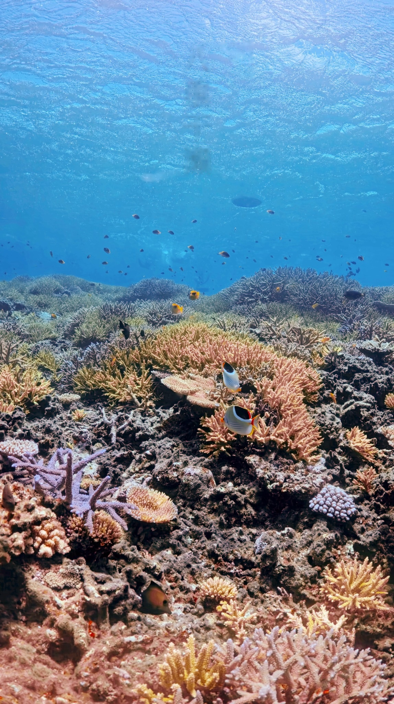

THE GREAT CORAL REEF
YABIJĪ 八重干瀨
走進廣闊的珊瑚礁海域，探索宮古島最具代表性的海洋生態。

Dive into the Blue. Discover the Island.
逃離日常，走進日本最迷人的海洋秘境。
在透明湛藍的海水中探索珊瑚礁、與海龜共游，穿越島嶼之間的海上大橋，感受宮古島獨有的海洋魅力。把日常留在岸上，讓自己重新感受海洋的節奏。

宮古島位於日本沖繩縣，海水透明、珊瑚生態豐富，從水下的珊瑚花園，到島嶼之間壯麗的跨海大橋，每一個角落都值得探索。

走進廣闊的珊瑚礁海域，探索宮古島最具代表性的海洋生態。

在海水與陽光交會之處，遇見島嶼最純粹的藍。

在廣闊珊瑚礁之間，尋找宮古島最迷人的海洋色彩。
走進岩洞與海水交會的空間，感受不同層次的宮古藍。

從水面到礁岩地形，欣賞島嶼海岸的自然樣貌。

清澈灣區與珊瑚礁交織而成的天然海洋樂園。
以海洋活動為主軸，搭配島嶼探索與自由時間。每日安排將依天候、海況、潮汐及當地合作業者調整。
抵達機場、接送與租車、入住住宿，進行當地採買及團體晚餐，為接下來的海洋旅程做好準備。
走訪宮古島北端的壯麗岬角，欣賞開闊海景與宮古藍，感受島嶼的遼闊與海風。
前往日本具代表性的群狀珊瑚礁海域，探索色彩豐富的珊瑚生態與熱帶魚群。

跨越全長約 3,540 公尺的伊良部大橋，探索海岸、海景與島嶼特色景點。
感受下地島西側天然灣區的清澈海水，享受浮潛、自由潛水與海岸時光。
早餐、整理行李、辦理退房與還車，前往機場，結束六天五夜的宮古島旅程。
※ 每日活動將依天候、海況、潮汐及當地合作業者安排調整，實際出海潛點不保證固定。
適合已取得 AIDA2 或其他同等自由潛水課程資格者參加。活動前將確認參加者資格與海洋活動經驗。
團費、出發日期與住宿資訊：待正式公告後更新。
需具備 AIDA2 或其他同等自由潛水課程資格。主辦團隊將於報名前確認參加資格。
旅程以自由潛水與海洋探索為主，並搭配浮潛及島嶼觀光；實際活動依海況與合作業者安排調整。
不保證固定潛點。天候、海況、潮汐與船家安排都可能影響出海，安全與適合當日的海況優先。
台灣往返日本機票不包含於團費。航班資訊依目前提供的星宇航空班次呈現，請以實際訂位及航空公司公告為準。
星宇航空｜台中清泉崗直飛日本下地島
去程 JX308：台中清泉崗機場 07:20 起飛，09:40 抵達日本下地島機場。
回程 JX309：日本下地島機場 10:40 起飛，11:00 抵達台中清泉崗機場。
※ 以上為目前提供的航班資訊，實際航班日期、時間及營運狀態請以航空公司公告與訂位紀錄為準。